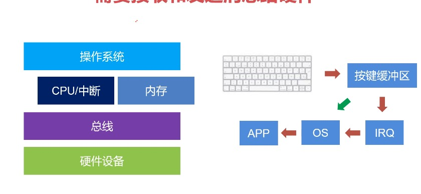
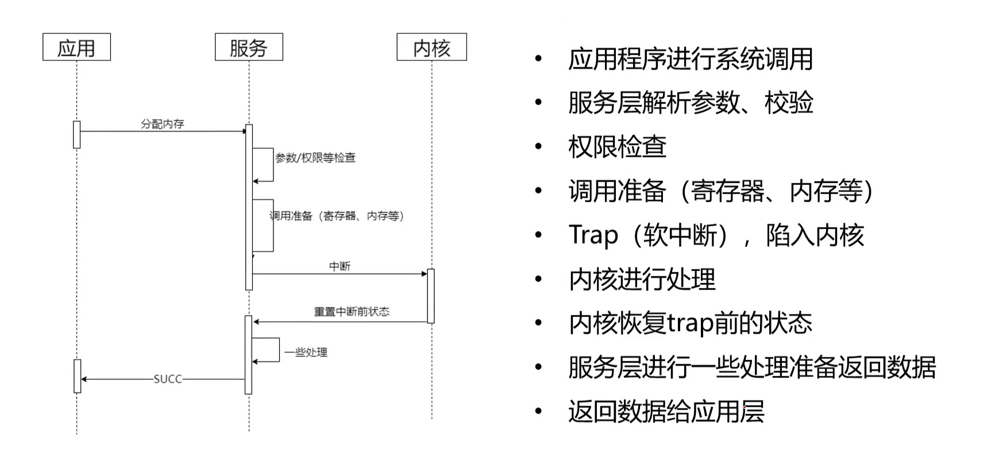
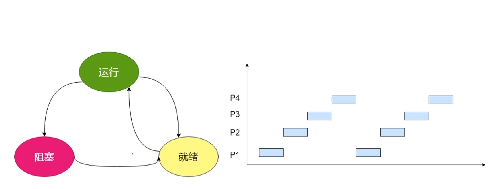
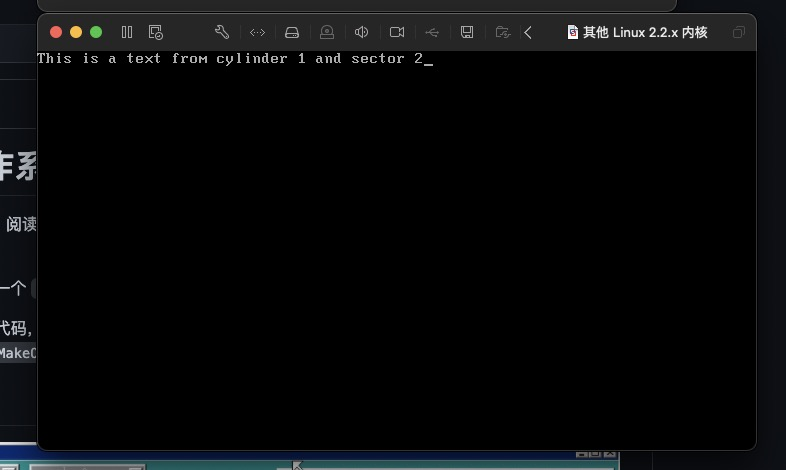
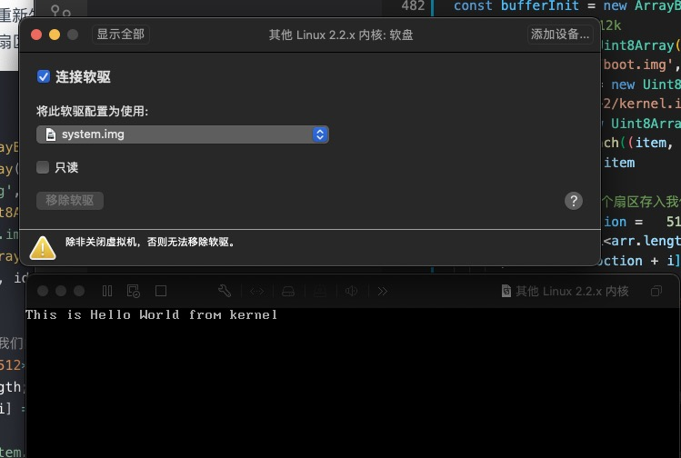
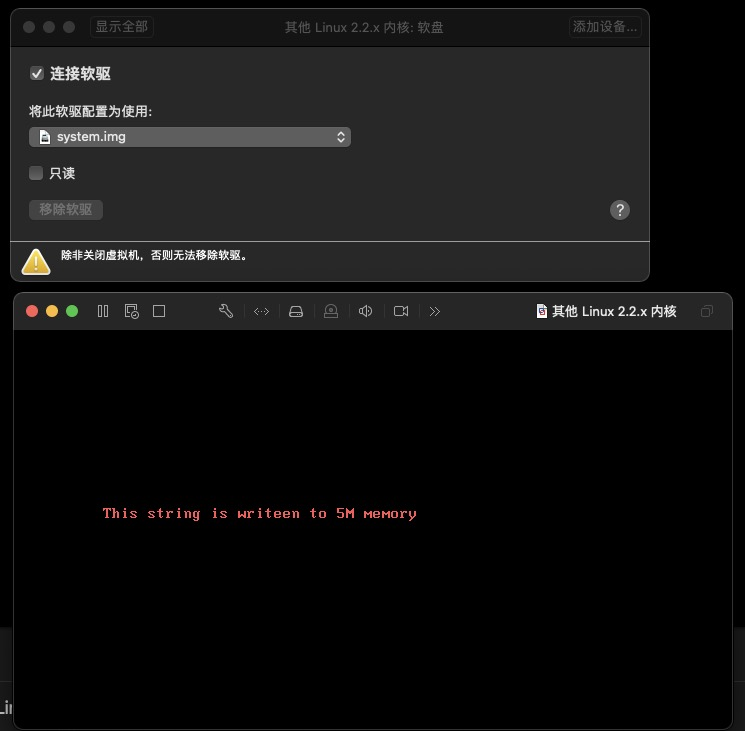
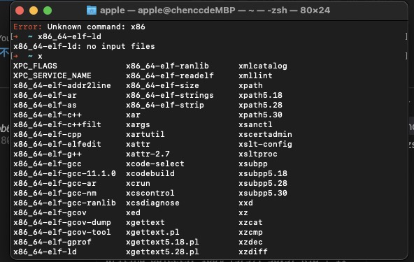
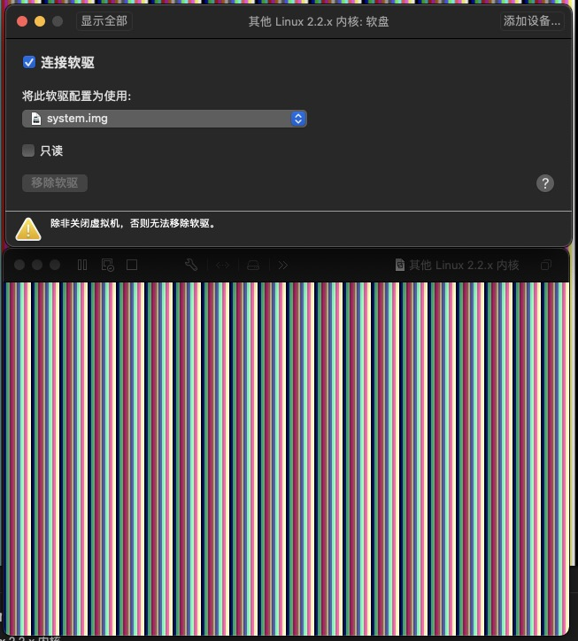

# 导学
# 为什么要了解操作系统
相比在大学时期大家还懵懵懂懂的时候就已经了解或接触过操作系统相关课程，但苦于代码量和能力的欠缺，对操作系统相关的东西还是有些不理解或是没有弄懂，为什么要这么设计操作系统，为什么要有线程，进程，许多并发场景操作系统是如何解决的，时间分片机制带来了哪些好处和问题，垃圾回收机制是如何在代码运行时高效清除不适用的对象。
# 好处
学习操作系统的设计思路，抽象，全局的去思考并解决一个问题,巩固基础知识，让代码更健壮， 加强代码的抽象能力和数据结构算法的基础使用能力,任何复杂业务中的问题最终都会抽象为操作系统以及相关基础知识的实现，无论前后端。
# 简介
# 操作系统主要做了什么
# 总结三个字: 不要停
while(true){
// 期间不能关机，不能停下，我要一直做事情，不然就宕机了
// 跑网易云云月， vscode, nodejs，游戏...
}
# 操作系统启动
- 开机 // 操作系统还在硬盘
- Bios //BASIC I/O System 最最基础的系统，仅支持汇编指令 move xxxxx xxxxx
- 装载引导程序MBR(master boot record) => 分区引导程序 => 转交内核给操作系统(go to 操作系统的代码行)
- 操作系统接管控制
# 操作系统的能力
# 连接硬件
鼠标，打印机等： 硬件设备 => 总线 => (内存 && CPU中断) => 操作系统  按键与内存中的按键缓冲区映射， 用户按下按键后会产生中断，操作系统接管了CPU中断，感知到用户按下某按键 => 发送EVENT事件至各大APP
Ring Buffer（键盘缓冲区）: 记录键盘按下的key的顺序，是一个环状且超出覆盖的缓冲区， 系统卡顿的时候按下多个按键操作系统会滴滴滴的叫,因为ring buffer满了管理和调度应用: 抽象 ｜ 隔离 ｜ 管理 ｜ 调度
抽象：
文件，硬件抽象出可理解的资源，比如文件对于磁盘只有磁道，扇区，柱面，变为可展开的树形结构目录
隔离：隔离每个应用， 应用之间不能冲突（外挂是如何做的： 修改游戏内某内存的数据，达到修改攻击等数据的）管理
关闭，强制退出，最小化，后台运行，应用异常调度
系统级别的进程肯定优先于用户的进程用户可以管理操作系统: 文件，app， UI，分辨率设置，开机密码， shell等
# 总结
操作系统是一个管理硬件设备（管理）， 资源以及应用程序；将硬件的能力，资源抽象成服务让应用程序使用(抽象)
# 内核和内核设计
# 分层
- 内核: 时钟，进程管理，进程调度，中断处理，进程通信等(内核态)
- 驱动： 打印机，显示器，磁盘，鼠标，键盘 （用户态）
- 服务： 文件服务，进程服务，自检（用户态）
- 应用：图形化界面和command终端（用户态）
# 权限
- 拆分权限（端口，文件，操作）
- 多态， 区分用户态和内核态(访问相册（同意后切换到内核态） => 再次切换回到原有的进程(用户态) )
# 内核设计: 参照B/S结构设计
# 为什么要用微内核
- 内核职责越少，可扩展性就越强。
- 现实中的其他系统设计： 分布式系统底层只是在做记录（区块链，日志系统），3D游戏引擎也只是做渲染。
- OSI七层模型 物数网传会表应
- 所有程序语言最底层就是机器指令(操作码 + 地址码)，上层是汇编(三地址代码, move xxx xxx)，在上层是高级语言
# 进程
操作系统的核心是程序， 操作系统对一个正在运行的程序的抽象就是进程，是操作系统调度资源的最小单位, 程序就是一段代码，这段代码只有运行时才算进程，在硬盘就不是了
# 抽象
在早起的计算机中只有一个核心，所有程序共享一个时间片段，操作系统需要提供一个模型去管理所有的程序，让程序以为CPU就只为他一个程序服务，于是就诞生了操作系统肿最核心的概念-进程(当我们写代码调试的时候，代码执行了一行然后下一行，就好像感觉CPU在一直为我工作， 其实不是，CPU很快，快到纳秒级别，10的-10次方这么短，基于CPU的中断和时间分片机制，他可以在处理你的代码后分享时间片给其他程序，比如你还能听歌，看视频，敲键盘，移动鼠标等)
# 进程的状态
- 进程管理 （适配中断机制，需要记录自己的状态信息，否则下次拥有执行权时无法知道自己上次到哪了）寄存器， 程序计数器， 程序状态子，堆栈指针（SP）, 优先级，父进程ID...
- 存储管理 程序段指针, 堆栈段指针， 数据段指针。 需要存储堆栈，空闲区，数据，程序
- 文件管理
根目录， 工作目录，文件描述，用户ID...
所以，进程是一种数据结构，是一张能描述以上信息的表
# C 创建进程
# fork函数
fork调用的一个奇妙之处就是它仅仅被调用一次，却能够返回两次，它可能有三种不同的返回值：
- 在父进程中，fork返回新创建子进程的进程ID；
- 在子进程中，fork返回0；
- 如果出现错误，fork返回一个负值；
// file test.c
#include <stdio.h>
#include <unistd.h>
int main() {
pid_t pid = fork();
if ( pid == 0) {
printf("i am child\n");
return 1;
}
printf("i am parent");
return 0;
}
使用gcc编译后生成a.out文件(相关编译模块的可以移步到编译原理查看)
gcc ./test.c # 直接编译成可执行文件， 跳过gcc四步骤(...汇编，机器码)
基于上述特性，我们将代码拆分开
#include <stdio.h>
#include <unistd.h>
int main() {
pid_t pid = fork(); // fork调用后会重新冲改行开始开启一个进程去执行之后的代码
// 父进程内， pid不等于0, 故不进入if
if ( pid == 0) {
printf("i am child\n");
return 1;
}
printf("i am parent"); // 执行后返回
return 0;
// 子进程
if ( pid == 0) { // 子进程中pid = 0，进入if
printf("i am child\n");
return 1; //返回
}
printf("i am parent"); //不执行
return 0;
}
- 适用于异步场景，当我们异步获取一个值后开一个进程去做相关的事情，父进程继续处理代码之后的任务。
所以上述代码会先打印parent后打印child
# 进程的状态
想象CPU在跑每一个进程时，每一个进程都有优先级和执行配额（当前可执行的时间），P1进程正在执行，这时P2是一个优先级更高正在等待执行的进程，当P1用完了他的配额，就会进入就绪状态，继续等待下一个执行时机，CPU就会触发中断机制，保存P1执行的现场，即上述的表结构，从而去执行P2进程，这时，P3进程也进来了，但P3进程他有用到硬盘数据，这会导致他进入阻塞状态，P3进程必须等待硬盘数据读取到内存中才能切换到就绪(排队等待被执行)状态等待继续执行
这里拓展下为什么node那么快，我们一打开官网官方就会说明node是一个异步非阻塞IO的服务端框架,当有读取磁盘或者处理request等异步场景时，基于eventLoop的事件模型，node能继续往下执行其他代码，只有等到读取完成了才会执行内部的代码,在不等待文件读取完成的情况下运行下面的代码的能力是一个可以提高吞吐量的关键设计选择。事件循环不同于许多其他语言的模型，其它语言创建额外线程来处理并发工作。
const fs = require('fs');
fs.readFile('/file.md', (err, data) => {
if (err) throw err;
console.log(data);
});
moreWork(); // will run before console.log
基于该特性我们可以使用c语言重新开一个进程也能达到这种效果，但进程频繁的创建本身就是很大的开销,而node单线程运行就达到了这种效果，性能消耗大大减小。下面是伪代码
#include <stdio.h>
#include <unistd.h>
int main() {
pid_t pid = fork(); // fork调用后
if ( pid == 0) {
// 子进程处理阻塞
// 这里我们处理异步任务
FILE *fpWrite=fopen("text.txt","w");
todoMore()
return 1;
}
moreWork(); // 父进程会继续执行
return 0;
# 进程中断
- 进程第一时间保存当前进程的状态(PC指针，SP栈指针)，操作系统不管是谁在执行，都不在乎，马上就要去执行下一个进程了，要保存当前进程的状态，即当前进程对应的指针(SP栈指针, PC指针-当前进程运行到哪行了)
- 跳转终端向量（存放中断向量的首地址），将程序转向中断向量的入口，例如：鼠标中断，断点，内存溢出，故障等
- 中断响应程序, 防止当前的寄存器不受污染，必须保存当前的寄存器
- 设置新的SP栈指针；即以前被中断后排队等待执行的进程被中断时保存的现场
- 执行中断服务程序，不限于任何语言实现，读取中断关联的数据，例如进程读取文件发生阻塞后产生中断，知道已经拿到了文件数据，原进程再次执行时就需要将缓冲区拿到的文件数据(句柄（类似于文件id）)跟进程进行关联
- 执行中断服务程序，决定下一个进程
- 恢复SP指针， PC指针
# 总结
- 进程随时都要保存自己的状态
- 进程随时都可能被切换
- 所有的进程都要排队
# 实战部分
简单的实现一个操作系统原理的helloword，部分代码参考此处
30天实现一个操作系统
MAC30天实现一个操作系统
vscode模式
# 第一天 hello word
# 了解汇编
汇编语言，是除了机器语言外的最底层的编程语言了。了解这门语言，可以帮助我们更加深入地理解CPU、内存等硬件的工作原理。用机器的思维去操作计算机。汇编语言和机器语言是一一对应的，汇编语言被编译成机器语言，这样的程序执行效率更高。 使用编译器，可以把汇编程序转译成机器指令程序。举例如下： 把寄存器 BX 中的内容送到 AX 中
机器指令： 1000100111011000
汇编指令： MOV AX, BX
; hello-os
; TAB=4
ORG 0x7c00 ; 指明程序装载地址， 0x7c00 BIOS读取操作系统的物理地址
; 标准FAT12格式软盘专用的代码 Stand FAT12 format floppy code
JMP entry
DB 0x90
DB "HELLOIPL" ; 启动扇区名称（8字节）
DW 512 ; 每个扇区（sector）大小（必须512字节）
DB 1 ; 簇（cluster）大小（必须为1个扇区）
DW 1 ; FAT起始位置（一般为第一个扇区）
DB 2 ; FAT个数（必须为2）
DW 224 ; 根目录大小（一般为224项）
DW 2880 ; 该磁盘大小（必须为2880扇区1440*1024/512）
DB 0xf0 ; 磁盘类型（必须为0xf0）
DW 9 ; FAT的长度（必??9扇区）
DW 18 ; 一个磁道（track）有几个扇区（必须为18）
DW 2 ; 磁头数（必??2）
DD 0 ; 不使用分区，必须是0
DD 2880 ; 重写一次磁盘大小
DB 0,0,0x29 ; 意义不明（固定）
DD 0xffffffff ; （可能是）卷标号码
DB "HELLO-OS " ; 磁盘的名称（必须为11字?，不足填空格）
DB "FAT12 " ; 磁盘格式名称（必??8字?，不足填空格）
RESB 18 ; 先空出18字节
; 程序主体
entry:
MOV AX,0 ; 初始化寄存器
MOV SS,AX
MOV SP,0x7c00
MOV DS,AX
MOV ES,AX
MOV SI,msg
putloop:
MOV AL,[SI]
ADD SI,1 ; 给SI加1
CMP AL,0 ; if (al == 0)
JE fin ; goto fin
MOV AH,0x0e ; 显示一个文字
MOV BX,15 ; 指定字符颜色
INT 0x10 ; 调用显卡BIOS, 调用一个中断，bios提供给汇编语言的库函数，这些库函数都放入到一个数组里，int 0x10 意思是在库函数数组中取出第0x10个库函数，然后执行该库函数的代码
JMP putloop
fin:
HLT ; 让CPU停止，等待指令
JMP fin ; 无限循环
msg:
DB 0x0a, 0x0a ; 换行两次
DB "hello, world"
DB 0x0a ; 换行
DB 0
RESB 0x7dfe-$ ; 填写0x00直到0x001fe
DB 0x55, 0xaa
# 编译汇编为二进制
使用nasm工具输出.img操作系统镜像文件, 可以在虚拟机中新建一个光驱加载，也可以使用虚拟机qemu命令行工具进行加载
nasm hello.s -o system.img
编译完成后安装完使用qemu运行推荐使用brew直接安装即可，brew install qemu
qemu-system-i386 -hdd hello.img
# 第二天 加载软盘数据
模拟3.5寸软盘，它有两个盘面 因此就对应两个磁头 每个盘面有80个磁道 也就是柱面 编号分别为0-79 每个柱面都有18个扇区 编号分别为1-18 所以一个盘面可以存储的数据量大小为：
512 * 18 * 80
一个软盘有两个盘面，因此一个软盘可以存储的数据为：
2 * 512 * 18 * 80 = 1474560 Byte = 1440 KB = 1.5M
使用汇编语言指定操作系统启动后读取制定位置软盘数据
org 0x7c00;
jmp entry
db 0x90
DB "OSKERNEL"
DW 512
DB 1
DW 1
DB 2
DW 224
DW 2880
DB 0xf0
DW 9
DW 18
DW 2
DD 0
DD 2880
DB 0,0,0x29
DD 0xFFFFFFFF
DB "MYFIRSTOS "
DB "FAT12 "
RESB 18
entry:
mov ax, 0
mov ss, ax
mov ds, ax
mov es, ax
mov si, msg
readFloppy:
mov CH, 1 ;CH 用来存储柱面号
mov DH, 0 ;DH 用来存储磁头号
mov CL, 2 ;CL 用来存储扇区号
mov BX, msg ; ES:BX 数据存储缓冲区
mov AH, 0x02 ; AH = 02 表示要做的是读盘操作
mov AL, 1 ; AL 表示要练习读取几个扇区
mov DL, 0 ;驱动器编号，一般我们只有一个软盘驱动器，所以写死
;为0
INT 0x13 ;调用BIOS中断实现磁盘读取功能
jc error
putloop:
mov al, [si]
add si, 1
cmp al, 0
je fin
mov ah, 0x0e
mov bx, 15
int 0x10
jmp putloop
fin:
HLT
jmp fin
error:
mov si, errmsg
jmp putloop
msg:
RESB 64
errmsg:
DB "error"
这时我们就可以运行nasm target.s -o base.img生成base.img文件了，但这个文件没有我们要写入的软盘的数据，所以我们用node.js对软盘进行二进制写入数据，其他语言皆可。
# 使用node对软盘数据进行写入
const fs = require('fs')
const bufferInit = new ArrayBuffer(2 * 512 * 18 * 80) // 初始化软盘数据, 2个盘面*80个磁道*18个扇区*扇区大小512k
const panel = new Uint8Array(bufferInit)
const msg = "This is a text from cylinder 1 and sector 2"
fs.readFile('./8-31/base.img',{}, (err, buffer) => {
const arr = new Uint8Array(buffer) // 转换为数组进行二进制操作
arr.forEach((item, idx) => {
panel[idx] = item
})
//第一个柱面第二个扇区存入我们的数据
const startLoction = 512*18*2 + 512
for(let i =0; i<msg.length; i++){
const charCode = msg[i].charCodeAt()
panel[startLoction + i] = charCode
}
fs.writeFile('./8-31/system.img',panel , 'binary', function(err) {
})
})
这时就能生成写入我们自己数据的软盘了，然后使用第三方虚拟机导入该软盘，就可以看到
被坑了三天，找来找去一直找不到原因，后来发现时虚拟机新建的时候随便选了win7，导致加载软驱一直异常，后来换了linux版就正常了 
# 第三天 引导内核
我们的系统内核,必须在虚拟软盘的第一扇区,但第一个扇区只有512个字节 因此 系统内核不能超过512个字节，在实际的操作系统中，往往软驱只是一个入口，承担一个内核加载器的作用，然后跳转到内核的加载地址。 所以，我们需要制作一个boot.asm去实现引导作用
org 0x7c00;
LOAD_ADDR EQU 0X8000
entry:
mov ax, 0
mov ss, ax
mov ds, ax
mov es, ax
mov si, ax
readFloppy:
mov CH, 1 ;CH 用来存储柱面号
mov DH, 0 ;DH 用来存储磁头号
mov CL, 2 ;CL 用来存储扇区号
mov BX, LOAD_ADDR ; ES:BX 数据存储缓冲区
mov AH, 0x02 ; AH = 02 表示要做的是读盘操作
mov AL, 1 ; AL 表示要练习读取几个扇区
mov DL, 0 ;驱动器编号，一般我们只有一个软盘驱动器，所以写死
;为0
INT 0x13 ;调用BIOS中断实现磁盘读取功能
JC fin
jmp LOAD_ADDR
fin:
HLT
jmp fin
编译为二进制文件boot.img
nasm ./boot.s -o boot.img
然后我们再把内核需要执行的代码分开编译到另一个文件
org 0x8000
entry:
mov ax, 0
mov ss, ax
mov ds, ax
mov es, ax
mov si, msg
putloop:
mov al, [si]
add si, 1
cmp al, 0
je fin
mov ah, 0x0e
mov bx, 15
int 0x10
jmp putloop
fin:
HLT
jmp fin
msg:
DB "This is Hello World from kernel"
继续执行编译为二进制文件kernel.img
nasm ./kernel.s -o kernel.img
这时就有两个文件， 一个是基础的加载引导文件程序， 一个是内核代码，我们需要用node对其进行重新生成一个文件，且将内核代码写入道制定的扇区（第1柱面 第2扇区）
const fs = require('fs')
const bufferInit = new ArrayBuffer(2 * 512 * 18 * 80) // 初始化软盘数据, 2个盘面*80个磁道*18个扇区*扇区大小512k
const panel = new Uint8Array(bufferInit)
fs.readFile('./9-2/boot.img', {}, (err, buff) =>{ // 内核引导
const sysBuffer = new Uint8Array(buff)
fs.readFile('./9-2/kernel.img',{}, (err, buffer) => { // 内核代码
const arr = new Uint8Array(buffer) // 转换为数组进行二进制操作
sysBuffer.forEach((item, idx) => { // 写入内核引导代码
panel[idx] = item
})
//第一个柱面第二个扇区存入我们的数据 512*18*2 + 512
const startLoction = 512*18*2 + 512
for(let i =0; i<arr.length; i++){ // 写入内核代码
panel[startLoction + i] = arr[i]
}
fs.writeFile('./9-2/system.img',panel , 'binary', function(err) {
})
})
})
执行后生成system.img后就可以通过虚拟机加载软盘，执行我们内核部分的代码打印了 This is Hello World from kerne 
# 第四天 保护模式启动
主要解决内存寻址的问题，从1M(2^20)到4GB(2^32) 因为早起都是实模式，dos界面，在实模式下，cpu只能处理最多16位的数据，同时地址总线也就20位，因此能访问的最大内存也就2^20 字节，也就是1M多，在保护模式下，cpu可以处理32位的数据，同时地址总线也扩张到32位，这样，cpu能访问的内存就可以一下子达到4G，开始支持图形化界面
boot.s 操作系统启动并读取上一章节制定软盘内的内容并执行
org 0x7c00;
LOAD_ADDR EQU 0X9000
jmp entry
db 0x90
DB "OSKERNEL"
DW 512
DB 1
DW 1
DB 2
DW 224
DW 2880
DB 0xf0
DW 9
DW 18
DW 2
DD 0
DD 2880
DB 0,0,0x29
DD 0xFFFFFFFF
DB "MYFIRSTOS "
DB "FAT12 "
RESB 18
entry:
mov ax, 0
mov ss, ax
mov ds, ax
mov es, ax
mov si, ax
readFloppy:
mov CH, 1 ;CH 用来存储柱面号
mov DH, 0 ;DH 用来存储磁头号
mov CL, 2 ;CL 用来存储扇区号
mov BX, LOAD_ADDR ; ES:BX 数据存储缓冲区
mov AH, 0x02 ; AH = 02 表示要做的是读盘操作
mov AL, 1 ; AL 表示要练习读取几个扇区
mov DL, 0 ;驱动器编号，一般我们只有一个软盘驱动器，所以写死
;为0
INT 0x13 ;调用BIOS中断实现磁盘读取功能
JC fin
jmp LOAD_ADDR
fin:
HLT
jmp fin
然后使用nasm boot.s -o boot.img生成boot.img镜像文件
新建kernel.s，即boot.s执行跳转的地方，include导入pm.inc的内容，pm.inc类似于用另一种的数据结构区存储内存地址的引用，所以当访问某个地址时会先拿到其存储的内容后才能访问到具体的地址。
%include "pm.inc"
org 0x9000
jmp LABEL_BEGIN
[SECTION .gdt]
; 段基址 段界限 属性
LABEL_GDT: Descriptor 0, 0, 0
LABEL_DESC_CODE32: Descriptor 0, SegCode32Len - 1, DA_C + DA_32
LABEL_DESC_VIDEO: Descriptor 0B8000h, 0ffffh, DA_DRW
GdtLen equ $ - LABEL_GDT
GdtPtr dw GdtLen - 1
dd 0
SelectorCode32 equ LABEL_DESC_CODE32 - LABEL_GDT
SelectorVideo equ LABEL_DESC_VIDEO - LABEL_GDT
[SECTION .s16]
[BITS 16]
LABEL_BEGIN:
mov ax, cs
mov ds, ax
mov es, ax
mov ss, ax
mov sp, 0100h
xor eax, eax
mov ax, cs
shl eax, 4
add eax, LABEL_SEG_CODE32
mov word [LABEL_DESC_CODE32 + 2], ax
shr eax, 16
mov byte [LABEL_DESC_CODE32 + 4], al
mov byte [LABEL_DESC_CODE32 + 7], ah
xor eax, eax
mov ax, ds
shl eax, 4
add eax, LABEL_GDT
mov dword [GdtPtr + 2], eax
lgdt [GdtPtr]
cli ;关中断
in al, 92h
or al, 00000010b
out 92h, al
mov eax, cr0
or eax , 1
mov cr0, eax
jmp dword SelectorCode32: 0
[SECTION .s32]
[BITS 32]
LABEL_SEG_CODE32:
mov ax, SelectorVideo
mov gs, ax
mov si, msg
mov ebx, 10
mov ecx, 2
showChar:
mov edi, (80*11)
add edi, ebx
mov eax, edi
mul ecx
mov edi, eax
mov ah, 0ch
mov al, [si]
cmp al, 0
je end
add ebx,1
add si, 1
mov [gs:edi], ax
jmp showChar
end:
jmp $
msg:
DB "Protect Mode", 0
SegCode32Len equ $ - LABEL_SEG_CODE32
pm.inc
%macro Descriptor 3
dw %2 & 0FFFFh
dw %1 & 0FFFFh
db (%1>>16) & 0FFh
dw ((%2 >> 8) & 0F00h) | (%3 & 0F0FFh)
db (%1 >> 24) & 0FFh
%endmacro
DA_32 EQU 4000h ; 32 位段
DA_C EQU 98h ; 存在的只执行代码段属性值
DA_DRW EQU 92h ; 存在的可读写数据段属性值
nasm kernel.s -o kernel.img继续生成镜像文件
继续使用node生成镜像文件
const fs = require('fs')
const bufferInit = new ArrayBuffer(2 * 512 * 18 * 80) // 初始化软盘数据, 2个盘面*80个磁道*18个扇区*扇区大小512k
const panel = new Uint8Array(bufferInit)
fs.readFile('./9-4/boot.img', {}, (err, buff) =>{ // 需要被写入的内核代码
const sysBuffer = new Uint8Array(buff)
fs.readFile('./9-4/kernel.img',{}, (err, buffer) => {
const arr = new Uint8Array(buffer) // 转换为数组进行二进制操作
sysBuffer.forEach((item, idx) => {
panel[idx] = item
})
//第一个柱面第二个扇区存入我们的数据 512*18*2 + 512
const startLoction = 512*18*2 + 512
for(let i =0; i<arr.length; i++){
panel[startLoction + i] = arr[i]
}
fs.writeFile('./9-4/system.img',panel , 'binary', function(err) {
})
})
})
# 第五天 保护模式超强寻址
全局描述符表(GDT) 该表的表项就叫描述符(descriptor),在描述符中 专门抽出4个字节 也就是32位数据来表示内存的基地址,这样,内存访问一下子就达到了4G,在原来的实模式下,cs, ds这些16位的寄存器往往用来存储段值
在保护模式下 这些寄存器用来存储指向GDT某个描述符的索引
在保护模式下 访问某处的内存时 仍然使用 [寄存器:偏移] 的方式，但是CPU的对地址的计算方法不再使用上面的公式，而是把寄存器中的值当做访问GDT的索引，在GDT中找到对应的描述符，从描述符中获得要访问内存的基地址，然后将基地址加上偏移，进而得到要访问的具体地址。
我们需要模拟写入一个地址5M以外的数据，以测试寻址效果
boot-read5m.s
%include "pm.inc"
org 0x7c00
jmp LABEL_BEGIN
[SECTION .gdt]
; 段基址 段界限 属性
LABEL_GDT: Descriptor 0, 0, 0
LABEL_DESC_CODE32: Descriptor 0, SegCode32Len - 1, DA_C + DA_32
LABEL_DESC_VIDEO: Descriptor 0B8000h, 0ffffh, DA_DRW
LABEL_DESC_5M: Descriptor 0500000h, 0ffffh, DA_DRW
GdtLen equ $ - LABEL_GDT
GdtPtr dw GdtLen - 1
dd 0
SelectorCode32 equ LABEL_DESC_CODE32 - LABEL_GDT
SelectorVideo equ LABEL_DESC_VIDEO - LABEL_GDT
Selector5M equ LABEL_DESC_5M - LABEL_GDT
[SECTION .s16]
[BITS 16]
LABEL_BEGIN:
mov ax, cs
mov ds, ax
mov es, ax
mov ss, ax
mov sp, 0100h
xor eax, eax
mov ax, cs
shl eax, 4
add eax, LABEL_SEG_CODE32
mov word [LABEL_DESC_CODE32 + 2], ax
shr eax, 16
mov byte [LABEL_DESC_CODE32 + 4], al
mov byte [LABEL_DESC_CODE32 + 7], ah
xor eax, eax
mov ax, ds
shl eax, 4
add eax, LABEL_GDT
mov dword [GdtPtr + 2], eax
lgdt [GdtPtr]
cli ;关中断
in al, 92h
or al, 00000010b
out 92h, al
mov eax, cr0
or eax , 1
mov cr0, eax
jmp dword SelectorCode32: 0
[SECTION .s32]
[BITS 32]
LABEL_SEG_CODE32:
mov ax, SelectorVideo
mov gs, ax
mov si, msg
mov ax, Selector5M ;用 es 指向5M内存描述符
mov es, ax
mov edi, 0
write_msg_to_5M: ;将si指向的字符一个个写到5M内存处
cmp byte [si], 0
je prepare_to_show_char
mov al, [si]
mov [es:edi], al
add edi, 1
add si, 1
jmp write_msg_to_5M
prepare_to_show_char:
mov ebx, 10
mov ecx, 2
mov si, 0
showChar:
mov edi, (80*11)
add edi, ebx
mov eax, edi
mul ecx
mov edi, eax
mov ah, 0ch
mov al, [es:si] ;由于es指向描述符LABEL_DESC_5M， 所以es:si 表示的地址是从5M开始的内存,si表示从5M开始后的偏移
cmp al, 0
je end
add ebx,1
add si, 1
mov [gs:edi], ax
jmp showChar
end:
jmp $
msg:
DB "This string is writeen to 5M memory", 0
SegCode32Len equ $ - LABEL_SEG_CODE32
其他操作和第四天一致， 然后运行我们生成的的system.img就会打印This string is writeen to 5M memory 
# 第六天 交叉编译 汇编+C
主要通过编译技术将多种不同的语言最终编译为一种后进而实现相互之间调用
# 整体思路
- 汇编写的代码通过nasm生成二进制文件
- C语言的代码通过gcc编译并链接
- gcc生成的二进制文件进行反汇编，得到汇编代码
- 将步骤1和步骤3的代码进行合并
# 准备工作
使用brew安装编译工具
brew install i386-elf-binutils
brew install i386-elf-gcc
使用brew安装后的命令行命令可能因为各平台或者系统版本都有差异， 可通过命令行输入一些关键信息按tab键查看相关命令找到自己相关的命令 
看了很多其他作者的相关文章，原本想说自己使用gcc生成，后来发现新版的mac系统的xcode已经不支持生成32位了，mac和ubantu等系统的教程大多都是根据自己的系统相关信息从而不一致的命令， 如部分博主的命令：i386-elf-gcc， i386-elf-ld, ld,等等。
上所有的操作默认编译32位系统， 目前最新的mac平台已经不支持32位了，所以我们要用第三方工具生成， 推荐使用linux虚拟机进行实验或者windows平台, MAC平台以下操作不能直接使用系统自带的gcc完成
汇编 => 二进制文件
nasm -f elf32 -o foo.o foo.asm
c文件 => 汇编
x86_64-elf-gcc -m32 bar.c -S -o bar.asm
c => 二进制文件
x86_64-elf-gcc -m32 -fno-asynchronous-unwind-tables -s -c -o bar.o bar.c
然后将上面两个生产的.o文件进行链接：
x86_64-elf-ld -m elf_i386 foo.o bar.o -o foobar
利用编译工具我们能将下面c代码编译为汇编代码
extern void foo_print(char* p, int len);
int bar_func(int a, int b) {
if (a > b) {
foo_print("the 1st one\n", 13);
} else {
foo_print("the 2nd one\n", 13);
}
return 0;
}
编译后的结果
; Disassembly of file: bar.o
; Mon Sep 13 21:58:35 2021
; Mode: 32 bits
; Syntax: YASM/NASM
; Instruction set: 80386
global bar_func: function
extern foo_print ; near
SECTION .text align=1 execute ; section number 1, code
bar_func:; Function begin
push ebp ; 0000 _ 55
mov ebp, esp ; 0001 _ 89. E5
sub esp, 8 ; 0003 _ 83. EC, 08
mov eax, dword [ebp+8H] ; 0006 _ 8B. 45, 08
cmp eax, dword [ebp+0CH] ; 0009 _ 3B. 45, 0C
jle ?_001 ; 000C _ 7E, 14
sub esp, 8 ; 000E _ 83. EC, 08
push 13 ; 0011 _ 6A, 0D
push ?_003 ; 0013 _ 68, 00000000(d)
call foo_print ; 0018 _ E8, FFFFFFFC(rel)
add esp, 16 ; 001D _ 83. C4, 10
jmp ?_002 ; 0020 _ EB, 12
?_001: sub esp, 8 ; 0022 _ 83. EC, 08
push 13 ; 0025 _ 6A, 0D
push ?_004 ; 0027 _ 68, 0000000D(d)
call foo_print ; 002C _ E8, FFFFFFFC(rel)
add esp, 16 ; 0031 _ 83. C4, 10
?_002: mov eax, 0 ; 0034 _ B8, 00000000
leave ; 0039 _ C9
ret ; 003A _ C3
; bar_func End of function
SECTION .data align=1 noexecute ; section number 2, data
SECTION .bss align=1 noexecute ; section number 3, bss
SECTION .rodata align=1 noexecute ; section number 4, const
?_003: ; byte
db 74H, 68H, 65H, 20H, 31H, 73H, 74H, 20H ; 0000 _ the 1st
db 6FH, 6EH, 65H, 0AH, 00H ; 0008 _ one..
?_004: ; byte
db 74H, 68H, 65H, 20H, 32H, 6EH, 64H, 20H ; 000D _ the 2nd
db 6FH, 6EH, 65H, 0AH, 00H ; 0015 _ one..
然后在一个汇编文件中调用该c代码编译后的汇编文件
[section .data]
arg1 dd 3
arg2 dd 4
[section .text]
global main
global foo_print
main:
mov eax, dword[arg1]
push eax
mov eax, dword [arg2]
push eax
call bar_func
add esp, 8
mov ebx,0
mov eax, 1
int 0x80
foo_print:
mov edx, [esp + 8]
mov ecx, [esp + 4]
mov ebx, 1
mov eax, 4
int 0x80
ret
%include "bar.asm"
# 注： 不同的教材和不同的平台都会有所不同，
只要安装完工具能正常运行即可， 后续的步骤会用到该工具进行各种编译
# 第七天 绘制图形界面
要想由字符模式转入图形模式，我们需要操作硬件，特别是向显卡发送命令，让其进入图形显示模式，就如同前面我们所做的，要操作硬件，一般需要使用BIOS调用，以下几行就是打开VGA显卡色彩功能的代码：
mov al, 0x13h
mov ah, 0x00
int 0x10
其中al 的值决定了要设置显卡的色彩模式，下面是一些常用的模式设置： 0x03, 16色字符模式 0x12, VGA图形模式, 640 * 480 * 4位彩色模式，独特的4面存储模式 0x13, VGA图形模式, 320 * 200 * 8位彩色模式，调色板模式 0x6a, 扩展VGA图形模式， 800 * 600 * 4彩色模式
# 汇编系统内核
结合第三天的知识， 我们需要使用第三天的boot.asm去加载我们的系统内核kernel.asm, 该内核主要实现保护模式启动，以及为C语言创建512字节大小的函数堆栈传惨调用
%include "pm.inc"
org 0x9000
jmp LABEL_BEGIN
[SECTION .gdt]
; 段基址 段界限 属性
LABEL_GDT: Descriptor 0, 0, 0
LABEL_DESC_CODE32: Descriptor 0, SegCode32Len - 1, DA_C + DA_32
LABEL_DESC_VIDEO: Descriptor 0B8000h, 0ffffh, DA_DRW
LABEL_DESC_VRAM: Descriptor 0, 0ffffffffh, DA_DRW
LABEL_DESC_STACK: Descriptor 0, TopOfStack, DA_DRWA+DA_32
GdtLen equ $ - LABEL_GDT
GdtPtr dw GdtLen - 1
dd 0
SelectorCode32 equ LABEL_DESC_CODE32 - LABEL_GDT
SelectorVideo equ LABEL_DESC_VIDEO - LABEL_GDT
SelectorStack equ LABEL_DESC_STACK - LABEL_GDT
SelectorVram equ LABEL_DESC_VRAM - LABEL_GDT
[SECTION .s16]
[BITS 16]
LABEL_BEGIN:
mov ax, cs
mov ds, ax
mov es, ax
mov ss, ax
mov sp, 0100h
mov al, 0x13
mov ah, 0
int 0x10
xor eax, eax
mov ax, cs
shl eax, 4
add eax, LABEL_SEG_CODE32
mov word [LABEL_DESC_CODE32 + 2], ax
shr eax, 16
mov byte [LABEL_DESC_CODE32 + 4], al
mov byte [LABEL_DESC_CODE32 + 7], ah
;set stack for C language
xor eax, eax
mov ax, cs
shl eax, 4
add eax, LABEL_STACK
mov word [LABEL_DESC_STACK + 2], ax
shr eax, 16
mov byte [LABEL_DESC_STACK + 4], al
mov byte [LABEL_DESC_STACK + 7], ah
xor eax, eax
mov ax, ds
shl eax, 4
add eax, LABEL_GDT
mov dword [GdtPtr + 2], eax
lgdt [GdtPtr]
cli ;关中断
in al, 92h
or al, 00000010b
out 92h, al
mov eax, cr0
or eax , 1
mov cr0, eax
jmp dword SelectorCode32: 0
[SECTION .s32]
[BITS 32]
LABEL_SEG_CODE32:
;initialize stack for c code
mov ax, SelectorStack
mov ss, ax
mov esp, TopOfStack
mov ax, SelectorVram
mov ds, ax
C_CODE_ENTRY:
%include "write_vga.asm"
io_hlt: ;void io_hlt(void);
HLT
RET
SegCode32Len equ $ - LABEL_SEG_CODE32
[SECTION .gs]
ALIGN 32
[BITS 32]
LABEL_STACK:
times 512 db 0
TopOfStack equ $ - LABEL_STACK
语句%include write_vga.asm”， 表明，我们要开发的C代码文件叫write_vga.c, 我们写完C代码后，会使用上一节的步骤将它编译成汇编，然后include到我们当前的汇编文件里，统一编译成可执行内核。
使用c绘制颜色
void CMain(void) {
int i;
char*p = 0;
for (i = 0xa0000; i <= 0xaffff; i++) {
p = i;
*p = i & 0x0f;
}
for(;;) {
io_hlt();
}
}
先将c生成二进制
x86_64-elf-gcc -m32 -fno-asynchronous-unwind-tables -s -c -o write_vga.o write_vga.c
然后在反汇编生成汇编代码
注意： 在生产汇编代码中去掉以section 开始的指令，这些指令会影响我们把当前汇编结合入内核kerne.asm. 同时去掉开头的两句：
./objconv -fnasm write_vga.o write_vga.asm
然后再将内核代码生成二进制， 内核依赖的pm.inc(pm.inc可在第四天保护模式找到)和write_vga.asm文件我们都已经生成
nasm -o kernel.bat kernel.asm
kernel.bat写入了两个扇区，也就是说，我们内核的大小已经超过了512字节。此时我们需要修改一下内核加载器，让内核加载器一次读入两个扇区才能把内核完全加载入内存，打开boot.asm，将readFloppy中的： mov ah, 0x02 mov al, 1 改成： mov al, 2
# 使用node合并为一个文件
const fs = require('fs')
const bufferInit = new ArrayBuffer(2 * 512 * 18 * 80) // 初始化软盘数据, 2个盘面*80个磁道*18个扇区*扇区大小512k
const panel = new Uint8Array(bufferInit)
fs.readFile('./9-13/boot.bat', {}, (err, buff) =>{ // 需要被写入的内核代码
const sysBuffer = new Uint8Array(buff)
fs.readFile('./9-13/kernel.bat',{}, (err, buffer) => {
const arr = new Uint8Array(buffer) // 转换为数组进行二进制操作
sysBuffer.forEach((item, idx) => {
panel[idx] = item
})
//第一个柱面第二个扇区存入我们的数据 512*18*2 + 512
const startLoction = 512*18*2 + 512
for(let i =0; i<arr.length; i++){
panel[startLoction + i] = arr[i]
}
fs.writeFile('./9-13/system.img',panel , 'binary', function(err) {
})
})
})
运行node后使用虚拟机运行我们的system.img文件 
后期会将所有的代码和objconv工具（适用mac平台）上传到github并在每个章节后附带地址
接下来就要引入c语言环境，然后就可以基于C语言实现图形化界面，鼠标，命令行工具，抽象出上述操作系统的一些概念，如线程，进程，中断，文件系统等。